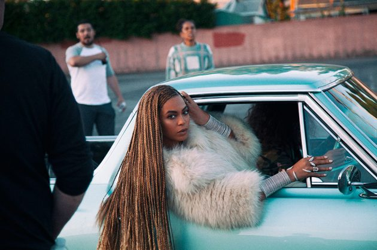

 Beyoncé’s fury at her adulterous husband burns bright on a surprisingly honest and personal sixth album
“Who the f**k do you think I am?” Beyoncé demands three tracks into her unforeseeably bold sixth album, ‘Lemonade’, her voice dripping with distortion. “You ain’t married to no average bitch, boy”. If these lyrics aren’t fiction, the man she’s castigating for adultery in the most public forum possible is her multimillionaire husband, Jay Z: “If you try this sh*t again,” she snarls, “you gon’ lose your wife.”
‘Lemonade’’s first four tracks are a thrillingly honest sucker-punch from a famously guarded pop star, who came to fame via Destiny’s Child and whose picture-perfect solo career has since helped her amass a fortune exceeding $450m. When, moments later (on ‘Sorry’) she tells Jay Z to “suck on my balls” the sense of release is palpable. These words come from a woman whose public image is so clean that FLOTUS Michelle Obama has said she wants to be her.
Many expected the subject of ‘Lemonade’ to follow the springy, markedly political steps of lead single ‘Formation’, but only ‘Freedom (feat. Kendrick Lamar)’ addresses the Black Lives Matter movement: alongside Beyoncé’s tour-de-force vocal Kendrick bristles, “Six headlights wavin’ in my direction / Five-O asking me what’s in my possession.” The significance of the album’s title is spelt out for listeners in the same track, with Jay Z’s mother, Hattie White rephrasing the proverb “when life gives you lemons…”
Like some of the most anticipated albums of the year so far – Rihanna’s ‘Anti’ and Kanye West’s ‘The Life Of Pablo’ – ‘Lemonade’ is strikingly varied. Among swathes of collaborators, some surprising names crop up, including James Blake, who lends gravitas to weepy cut ‘Forward’, and Vampire Weekend’s Ezra Koenig, who helped produce the lethal sing-song cut ‘Hold Up’. Even blues-rock hero Jack White has a turn, sampling Led Zeppelin on ‘Lemonade’s most vital track, ‘Don’t Hurt Yourself’.
Where her huge team fails to innovate is on the album’s drab middle few cuts about acceptance and forgiveness – chief among them the horrible hoedown ‘Daddy Lessons’, which blends whooping with boring rhymes (“Daddy made me fight / It wasn't always right”). But the final four tracks see quality return, and penultimate track ‘All Night’, in particular, is one of Beyoncé’s most nuanced vocal performances to date. It feels as appropriate an end as any to ‘Lemonade’: sweet but with an edge, as she recalls, “Our love was stronger than your pride”.
Opening with deep synth, and choral harmonies sung by Beyoncé, this piano- and strings-backed ballad opens the album with suspicion, as Beyoncé notes strange behaviour from her husband. “You can taste the dishonesty” are the album’s bleak first words.
Fun fact about this one: Ezra Koenig tweeted the lyrics to its chorus five years ago and now they’re on the song. They’re also partly interpolated from a Yeah Yeah Yeahs song called ‘Maps’.
https://twitter.com/arzE/status/127520992565272576
In the film version of this track, Bey wanders the streets bashing in car windows with a baseball bat, and later driving over a series of parked cars with a monster truck. She’s pissed off with Jay, basically. Key lyrics: “Going through your call list / I don’t wanna lose my pride, but I’ma f**k me up a b***h”
Read more at http://www.nme.com/reviews/album/reviews-beyonce-16452#Dfx621yupAsOMKit.99
Jack White brings vocal distortion and blues to this Led Zeppelin-sampling rocker in which Bey loses her shit.
This is a synth jam in which Bey embodies ‘sorry not sorry’, and makes reference to “Becky with the good hair”, who Jay has apparently been sleeping with. Gossip columns allege that Becky; is really called Rachel Roy.
A less personal track, this is Beyoncé’s ode to hard-working women. (“She's stacking money, money everywhere she goes”) According to co-producer Boots, the Animal Collective interpolation (“she too smart to crave material things), from ‘My Girls’, was written by accident:
“You write it and sing it and think ‘thats fucking great!!!’ and everyone high fives and you’re all geniuses for fourteen seconds but it turns out its great because someone else already fucking wrote it. That song is a jam.”
Clappy, whoopy, telling the story of how Bey’s father and his mistakes will inform her own parenting style. It’s got trumpets and some country drumming in it, as well as some acoustic guitar.
A mix of gloopy and feather-light synths gloss this track about trying to make things work and the power of her relationship.
A weepy, piano-backed ballad about wet sand. Has the disappointing consistency of wet sand.
Blake has the weepy ballads down, adding gravitas to this sparse, one-minute piano-led tune, which he actually sings most of.
The martial force of these drums lend a military feel to this track featuring Kendrick Lamar, who raps about police brutality while Beyoncé calls for freedom.
All is forgiven, but not forgotten, on this upbeat penultimate track, which has a killer bassline. It’s one of two tracks on the album produced by Diplo.
The political lead single that touched on issues like New Orleans post-Katrina. Its video contained graffiti in support of the Black Lives Matter movement, like ‘stop shooting us’.